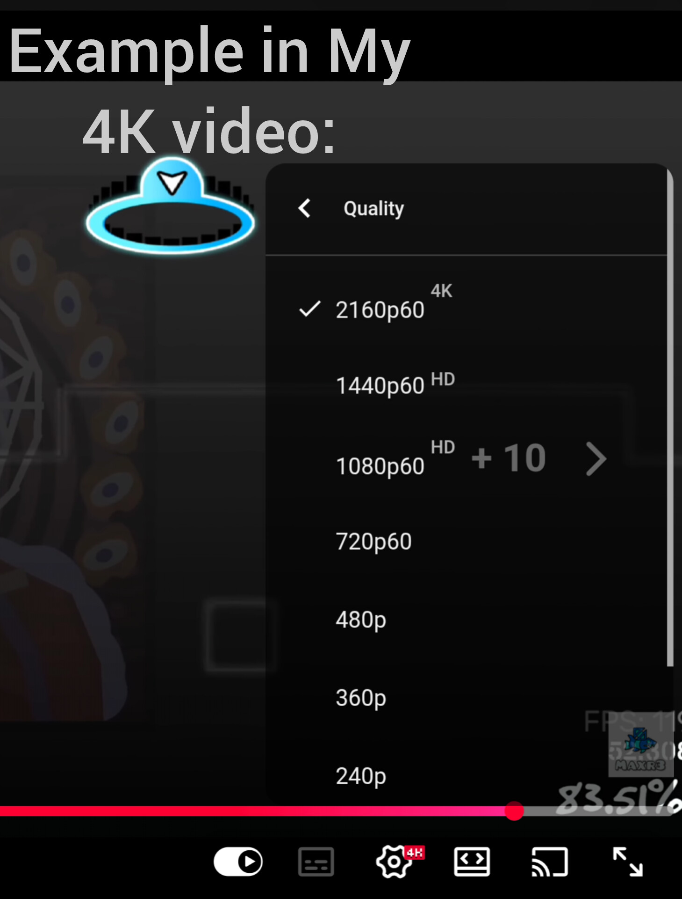
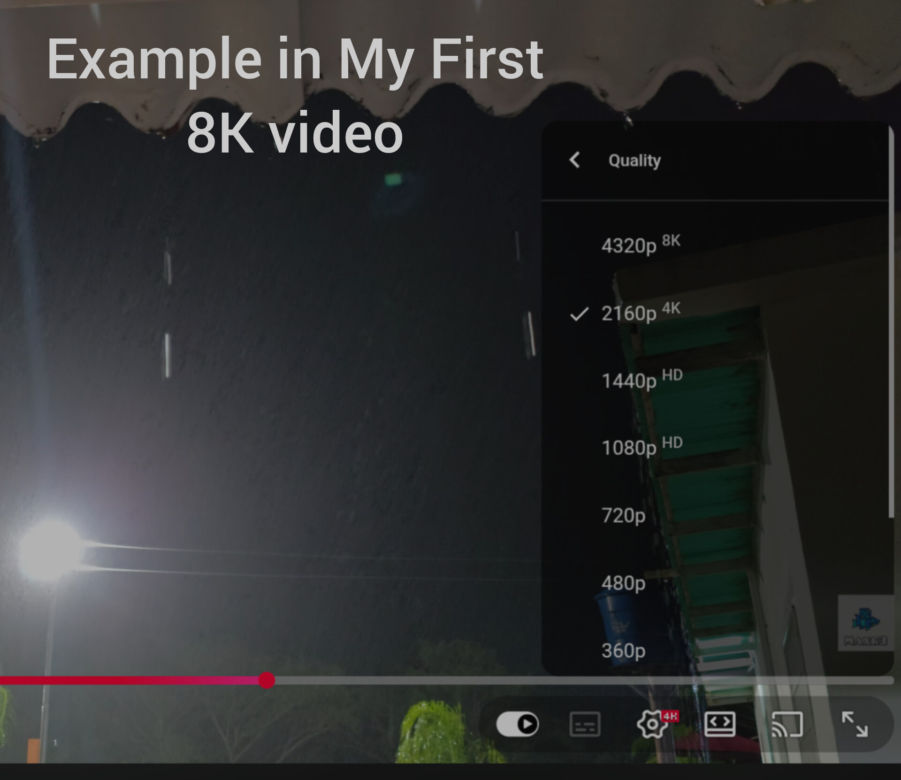

Discover a curated library of extreme definition experiences. From ultra-vibrant videos up to crystal-clear 8K Resolution, capturing the pure atmosphere of realistic environments and custom interactive gaming platforms.
Experience a breathtaking night rain scene captured in unmatched clarity. Witness every single raindrop breaking against the city lights with pristine detail.
Compare and preview the extreme visual clarity of our native workflows through real screen captures.
An aesthetic representation of the crystal clear details captured across standard high framerate upscaled uploads.

example4K.jpgExample image placeholder (File not found yet)Static display from the iconic Night Rain video recorded on May 30th and uploaded on June 1st.

examplefirst8K.jpgExample image placeholder (File not found yet)Explore our full catalog directly updated from YouTube. Standardized resolutions are filmed at native high framerates and upscaled to state-of-the-art standards.
💡 Can't see the full gallery? Make sure cookies are allowed.
We offer professional-tier recording and editing processes designed to turn raw source captures into immersive high-fidelity outputs.
Every video begins captured in high quality. The source files are filmed natively at 1440p resolution at 60 Frames Per Second to guarantee absolute clarity and responsive motion.
Our team structures raw clips seamlessly. Colors are dynamically corrected and atmospheric audio design is embedded to make the sensory experience as deep as possible.
Finally, the fully edited video undergoes a high-end conversion process, upscaling and rendering it to 4K UHD resolution at 60 FPS with premium bitrate optimizations.
Step inside a custom Geometry Dash Private Server made for creators and daring players. Explore fresh community levels, custom features, rates, and test your skills with players globally.
Current server link: mr3gdps1938.ps.fhgdps.com